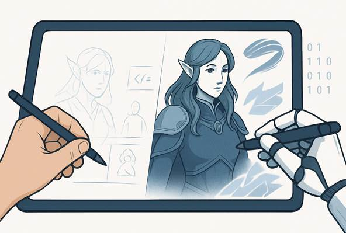
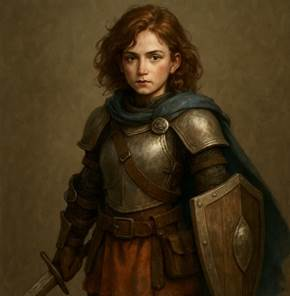

Research Article for IEEE WIE CEG Name: Swetha R Barade
Department: IT
Roll number: 2022115072
Role: Head of Events at IEEE WIE CEG
AI Co-Designers: How Machines Are Reshaping the Creative Process
|  |
Keywords
AI co-creativity, generative AI, mixed-initiative design, computational creativity, collaborative intelligence, ChatGPT, Midjourney, Sora, copyright, authorship
Abstract
Generative AI tools such as ChatGPT, Midjourney, and RunwayML are transforming the creative landscape—blurring the line between human inspiration and machine intelligence. This article
explores how AI operates not just as a tool but as a co-designer, collaborating in workflows across art, music, code, and storytelling. We go beyond the “AI is stealing jobs” narrative to examine how machines enhance creativity while posing challenges to originality, authorship, and identity. By
combining theoretical frameworks with hands-on demonstrations, this article aims to understand the future of creative collaboration between humans and intelligent systems.
Introduction
The creative process is undergoing a radical transformation. Artificial intelligence is no longer just a tool but an active collaborator—one that paints, composes, writes, and codes alongside humans. Tools like ChatGPT, Midjourney, and Sora are redefining what it means to "create," pushing us into an era of co-design where machines offer not just suggestions but stylistic contributions.
This article explores how these AI tools are reshaping creative workflows, combining human intuition with machine intelligence. By experimenting with these tools firsthand and analyzing their outputs, we attempt to understand AI’s role not as a competitor, but as a creative collaborator.
Theoretical Foundations
The foundation of AI co-creativity rests on the concept of mixed-initiative interaction, where both human and machine contribute meaningfully to the outcome. Rather than simply automating tasks, modern AI systems participate in exploratory and transformational creativity, offering ideas that expand a user’s imagination.
· Computational Creativity (Margaret Boden): Distinguishes between P-creativity (personal novelty) and H-creativity (historical novelty). Most AI tools today aim for P-creativity—ideas new to the user.
· Mixed-Initiative Systems (Lin et al., 2023): Emphasize dynamic control-sharing between humans and machines across different stages of creation—ideation, iteration, and evaluation.
This study bridges theory with practice by testing tools through real-world creative prompts, comparing AI behaviour, and observing its impact on the human process.
Tool Overview: AI as a Co-Designer
|
Tool |
Primary Uses |
Strengths |
|
ChatGPT |
- Brainstorming storylines, poetry, marketing copy - Code generation with stylistic coherence - Tone and language adjustments |
- Highly explainable - Interactive and responsive to feedback |
|
Midjourney |
- Visualizing ideas (photorealistic or stylized) - Rapid prototyping for art, fashion, game design, branding |
- Unique visual aesthetic - Easy prompt control - Rapid variation generation |
|
RunwayML |
- Generating short video clips or animated visuals from text prompts - Storyboarding and concept visualization |
- Accessible video generation - Quick draft creation - Simple UI for non-designers |
Case Studies: Human-AI Co-Creation
Prompt 1: “A futuristic Indian city at sunrise in cyberpunk style”
Tool: Midjourney
Observation:
Midjourney captured neon elements and architectural depth well, though cultural markers specific to India were
underrepresented.
Prompt 2: “Design a character for a fantasy video game, complete with personality traits, backstory, and skillset”
Tool: ChatGPT
Character Name: Sylra Moondusk
Personality: Mysterious, fiercely loyal, strategic thinker.
Backstory: A former high priestess banished from the Astral Council after exposing
corruption. She now wanders the cursed lands, seeking magical relics to restore balance to the realms.
Observation:
ChatGPT provided a rich, coherent character profile with logical abilities matching the fantasy genre, though visual imagination was inherently text-bound.
Prompt 3: “A woman walking through clouds, anime style, magical realism feel”
Tool: RunwayML
Observation:
The image beautifully captured the magical realism tone with anime- inspired softness. However, fine- grained control over facial features and intricate detailing was limited compared to Midjourney.
Comparative Summary Table
|
Prompt |
Tool |
Strength Observed |
Limitation |
|
Futuristic City |
Midjourney |
Great neon/lighting, rapid stylization |
Cultural detailing lacked |
|
Fantasy Character |
ChatGPT |
Rich backstory/personality crafting |
Limited visual imagination |
|
Woman in Clouds |
RunwayML |
Soft, atmospheric aesthetic |
Detailing control limited |
Evaluation Metrics
|
Metric |
Description |
|
Novelty |
Is the output creative in form or idea? |
|
Relevance |
Does it align with the user’s prompt or intention? |
|
Control |
Can the user meaningfully guide or tweak the AI? |
|
Satisfaction |
How do creators feel about the AI’s involvement? |
|
Transparency |
Is the creative process explainable or opaque? |
Results & Observations
· AI co-designers perform best when guided closely—they’re idea enhancers, not replacements.
· ChatGPT excels in ideation and structured tasks (like transforming poetry into code).
· Midjourney outputs stunning visuals but require prompt precision to avoid style hallucination.
· Users reported a higher sense of “partnership” when AI’s suggestions were iterative and adaptive rather than generic.
Discussion: The Shift in Creative Agency
As AI becomes a co-designer, human agency in creativity shifts from creator to curator-director.
While AI can generate novel ideas, it lacks the intent and contextual depth that human artists bring. The reliance on tool-dependent aesthetics (e.g., Midjourney’s visual signature) raises concerns about homogenized creativity. However, AI's augmentation of human workflows democratizes access to professional-level outputs, making creativity more inclusive.
This evolution necessitates a rethinking of creative ownership, skill valuation, and the future role of the "human artist" in AI-mediated projects.
Conclusion
AI co-designers are no longer just tools; they are collaborators shaping the future of creativity. Their strength lies not in replacing human imagination but in extending it. The challenge ahead is not about whether AI can create, but how we define authorship, originality, and creative control in this new partnership. With thoughtful experimentation, clear ethical boundaries, and continuous human input, AI can become a true co-pilot for creators everywhere.
References
1. Lin, Z., Ehsan, U., Agarwal, R. et al. Beyond Prompts: Exploring the Design Space of Mixed Initiative Co-Creativity Systems, arXiv, 2023. https://arxiv.org/abs/2305.07465
2. Zhou, J., Li, R., Tang, J. et al. Understanding Nonlinear Collaboration Between Human and AI Agents: A Co-Design Framework, arXiv, 2024. https://arxiv.org/abs/2401.07312
3. Anantrasirichai, N., Bull, D. Artificial Intelligence in the Creative Industries: A Review, arXiv, 2020. https://arxiv.org/abs/2007.12391
4. Hertzmann, A., Epstein, Z. Art and the Science of Generative AI: A Deeper Dive, arXiv, 2023. https://arxiv.org/abs/2306.04141